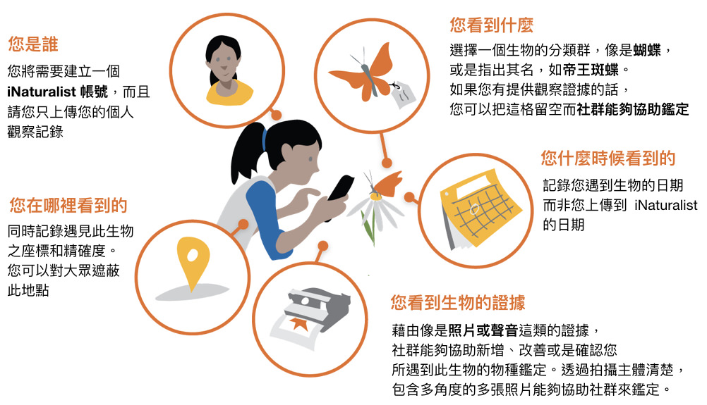
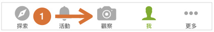
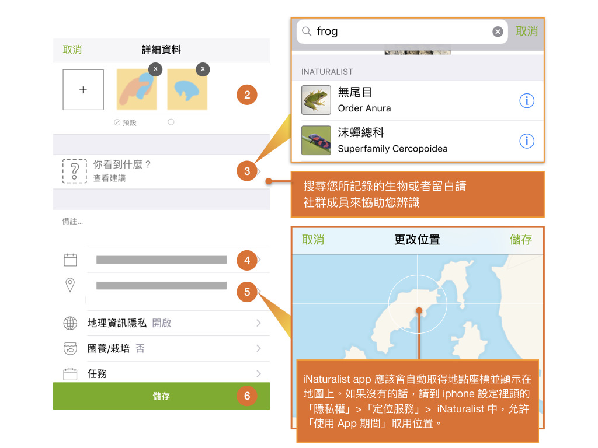
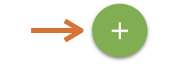
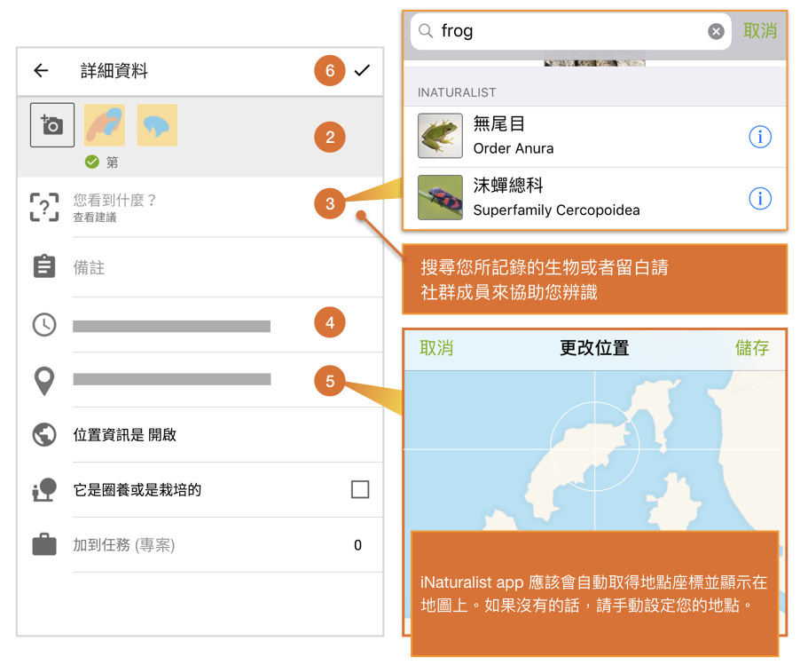
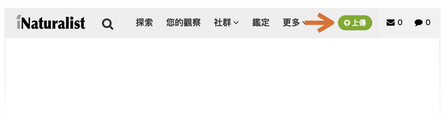
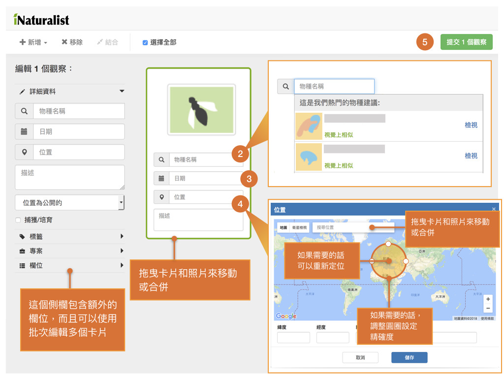

5 觀察記錄
5.1 什麼是觀察記錄
一筆觀察資料記錄了在特定時間和地點所遇到的生物個體。這包含了生物留下來的記號，諸如蹤跡、巢或是剛死亡的個體。當您建立一筆觀察記錄時，您將需要記錄： 
5.2 如何觀察生物與記錄（上傳觀察記錄操作說明）
5.2.1 利用手機上傳觀察記錄
如何使用您的 iPhone 建立一筆觀察記錄
- 點選「觀察」

新增一至多張照片作為觀察的證據
點選「你看到什麼？」並輸入，或是留白也沒關係
你在什麼時間看到這種生物應該會自動新增
你在什麼地點看到這種生物應該也會自動新增，如果沒有顯示地點的座標資訊，請手動至「設定」>「隱私權」>「定位服務」中開啟 iNaturalist 並設定為「使用 App 期間」
儲存你的觀察記錄(如果預設是自動上傳的話，此字樣會變成分享) 
上傳並和社群分享，這個應該會自動執行，如果沒有的話請按上傳按鈕。你可以從「我」的頁籤中至 app 設定把自動上傳關閉。
之後回到活動頁籤中看社群針對這筆觀察記錄的活動
如何使用您的 Android 建立一筆觀察記錄
- 從「我的觀察」中點選加號按鈕

- 新增一至多張照片作為觀察的證據
- 點選「你看到什麼？」並輸入，或是留白也沒關係
- 你在什麼時間看到這種生物應該會自動新增
- 你在什麼地點看到這種生物應該也會自動新增，如果沒有顯示地點的座標資訊，請手動至「設定」確認地理座標隱私權是否開啟
- 儲存你的觀察記錄

5.2.2 利用電腦上傳觀察記錄
- 在登入的狀況下，點選畫面右上方的綠色「上傳」按鈕

- 上傳觀察記錄的頁面，可以將電腦中的照片用滑鼠拖曳的方式，一次加入一張或多張照片。每一張上傳照片，都預設為一筆「觀察記錄」，所以在上傳前，需要將同一筆觀察記錄的不同照片，（同樣用拖曳的方式）合併為一筆觀察記錄。你也可以利用左上角的「新增」按鈕來建立沒有照片的觀察記錄，或點選「更多匯入選項」的選單，來上傳csv格式的檔案，或是從外部網站匯入資料。

- 從建議物種或搜尋中，選擇物種的名稱。如果你無法找到觀察記錄的確切物種，讓物種欄位保持空白，或是使用「位置標誌符」。如果你輸入的學名無法辨認，請點選「搜尋外部名稱提供者」從其他地方匯入此生物。如果你觀察的這個生物是捕獲或是培育的利用，請勾選側欄的選項讓我們知道。
- 利用日曆欄位輸入你觀察到生物的日期
- 輸入地址，並從提供的地點中選擇地點，以計算坐標和描述觀察地點的精確圓形範圍。你也可以放大地圖並且手動調整點位及精確圓形區域的尺寸。
- 上傳你的觀察記錄。
- 確認你的觀察記錄社群在社群上的更新訊息，你也可以在帳戶設置中，設定電子郵件更新提醒。
5.3 蒐集各類群生物記錄的技巧與品質
5.3.1 拍照
愛自然的每一筆觀察紀錄中，照片/聲音對於鑑定來說是很重要的依據，若您想讓您的觀察紀錄快速並正確被鑑定，請記得要檢核一下您的觀察紀錄是否符合以下的原則：
- 植物(Plants)
- 不管是木本或草本植物，請儘可能拍全株(包含周遭環境)和部分的細部特徵，像是花、果實、種子等
- 拍花的時候需注意的細節
- 如果有餘力，請先查各個不同的科/屬/種等分類群有哪些需要拍到的特徵，例如萼片形狀、花瓣形狀、花冠筒上面有無毛等
- 可放整朵花還有細部特徵照片
- 拍葉的時候需注意的細節
- 葉子有許多特徵，諸如著生方式(對生、互生、輪生、叢生等)、葉形、葉背、葉表等。如果時間允許，可先仔細觀察哪些特徵是和其他分類群不同的（有無毛）
- 拍蕨類需要注意的細節：全株、葉片特徵細節(正面、反面)、葉莖上的鱗片、孢子囊堆等
- 鳥類(Aves)
- 盡可能使用長焦段的相機拍攝，或是照片盡量裁切，讓目標鳥種特徵清晰。
- 若一張照片有多個種類，建議分別裁切後再分開上傳，或是將目標裁切至畫面正中央。
- 錄音檔可以試著剪輯並擷取目標鳥種的聲音，否則有時候遇到多種混群會難以鑑定。
- 農田生態系[未完成]